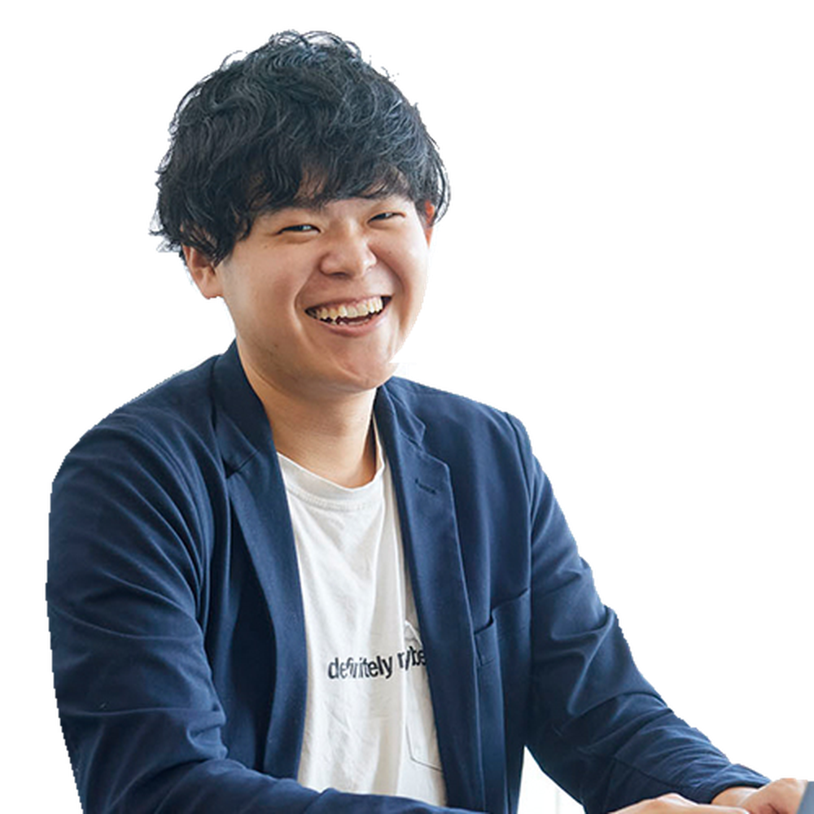
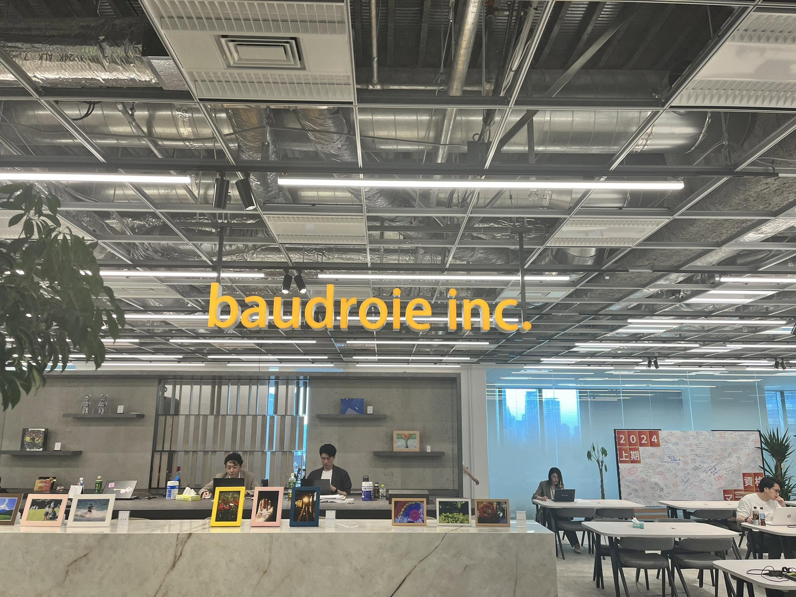
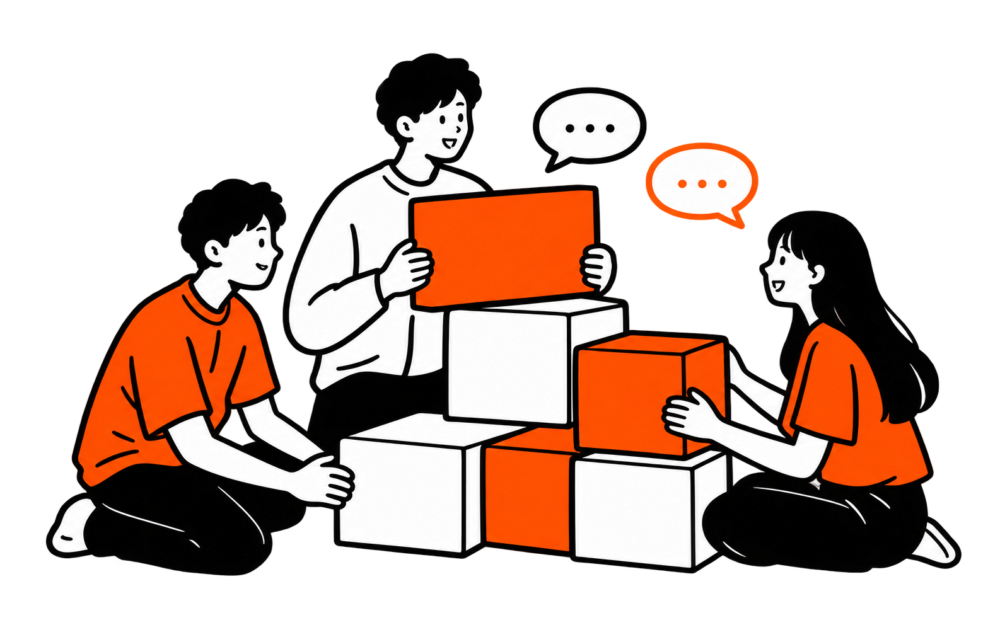
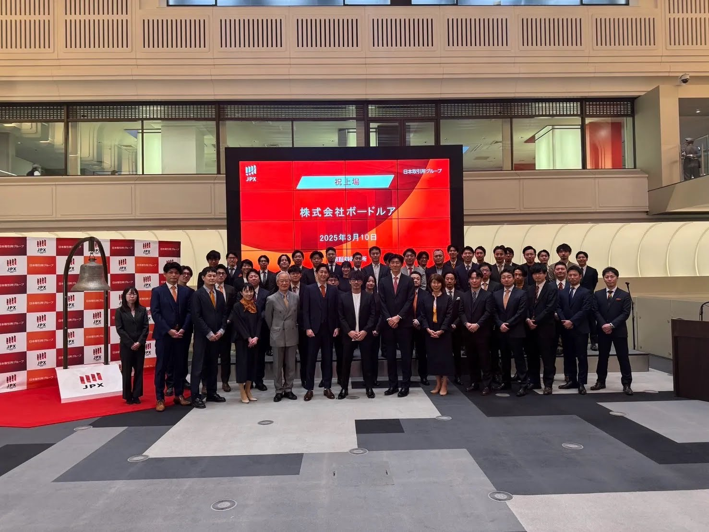

仕事を
任せてもらう
複数のプロジェクト経験が、技術と働き方の成長につながった。
青山学院大学出身のあなたへ

同じ
キャンパスから、
新しいキャリアへ。
2014年 新卒入社
事業統括本部 執行役員
好きなこと：ゲーム・読書
あの頃の好奇心が、いまのキャリアにつながっている。
学生時代
大学時代は、ほぼIT未経験。
就職活動
若手にも責任ある仕事を任せる環境に魅力を感じ、入社を決めた。
2014年
新卒入社
ITインフラから、クラウド導入支援、海外拠点のネットワーク刷新へ。
2021年
部長
エンジニア組織のマネジメントと、キャリア支援へ。
2024.06
執行役員
子会社のPMIや事業部の統括を担う。
現在・
これから
採用にも力を入れ、新たな仲間との接点を広げている。
自分の成長を、仲間の夢を支える力に。

PMI：グループに加わった会社の組織や事業づくりを進める仕事。
事業と組織の両面をリード。
一緒に働く仲間を増やしていく。

複数のプロジェクト経験が、技術と働き方の成長につながった。
稲葉が大切にするのは、学ぶ場所と、相談できる人の両方。
ゲームをきっかけに、部署や役職を越えて会話が生まれる。

A稲葉自身も、経済学部・IT未経験から入社しています。募集ごとの条件は個別にご確認ください。
A先輩社員が講師を務める技術研修「カレッジ」など、段階的に学べる環境があります。
A募集要項は分かれています。ご自身に合う対象をご確認ください。
ちょっと気になる、
からで大丈夫。